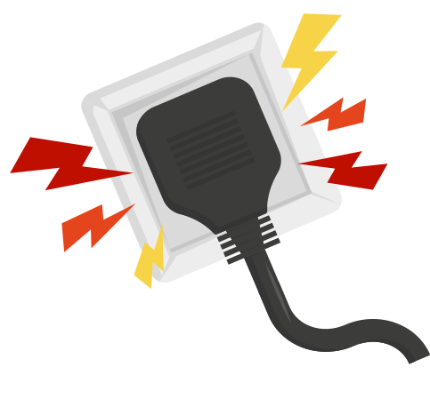

<div class="d-flex justify-content-between row col-12">
    <div class="col-md-7 col-12 ps-0">
        <h4 class="mb-4 titulo">Qual é o tipo de ligação do seu prédio ou condomínio?</h4>

        <div class="mt-3 texto">
            Caso não saiba responder, consulte o síndico ou construtora para obter essa informação.
        </div>

        <div class="mt-3">
            <mat-radio-group [(ngModel)]="categoriaApt">
                <mat-radio-button value="MONOFÁSICA" class="mt-2 me-3 mb-2 texto">
                    <strong>MONOFÁSICA</strong>
                </mat-radio-button>
                <mat-radio-button class="me-3 mb-2 texto" value="BIFÁSICA">
                    <strong>BIFÁSICA</strong>
                </mat-radio-button>
                <mat-radio-button class="texto" value="TRIFÁSICA">
                    <strong>TRIFÁSICA</strong>
                </mat-radio-button>
            </mat-radio-group>
        </div>
    </div>
</div>

<div class="d-flex justify-content-between justify-content-md-start mt-5">
    <div class="me-3">
        <button type="button" class="btn btn-outline-secondary mx-auto" title="voltar"
            (click)="voltar()">VOLTAR</button>
    </div>

    <button type="button" class="btn btn-primary-green" title="Avançar" [disabled]="categoriaApt === ''"
        (click)="continuar()">CONTINUAR</button>

</div>
